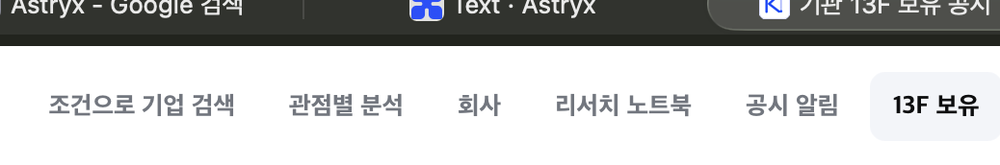

TL;DR — 별도의 “페이지를 라우팅하는 거대한 컴포넌트”는 만들지 않는 편이 맞습니다.경로 정의를 한 곳에 둔 workspaceRoutes와, 이를 데스크톱 상단바·모바일 메뉴 시트로 각각 그리는 WorkspaceNavigation을 만드세요. ChatSidebar는 전역 메뉴가 아니라 최근 채팅 전용 빠른 접근으로 축소합니다. 즉, 햄버거는 워크스페이스 이동, history 아이콘은 채팅 안에서 최근 기록이라는 서로 다른 역할입니다.
현재 상태

현재 데스크톱에는 6개의 동급 목적지(조건 검색·관점별 분석·회사·노트북·공시·13F)가 평평하게 나열되어 있습니다. 폭과 가독성은 괜찮지만, 같은 경로가 채팅 패널 안에서도 다시 관리되면 시간이 지날수록 두 메뉴가 어긋납니다.
무엇을 바꿀지
가장 큰 효과
1. “경로의 진실 공급원”을 하나로 만들기
TopNav가 경로를 정의하고 ChatSidebar가 다시 정의하는 구조를 끝냅니다. 새 컴포넌트는 페이지를 상태로 갈아끼우지 않습니다. Next의 URL 라우팅은 그대로 두고, 어떤 URL이 어느 워크스페이스인지와 어느 화면에서 어떻게 보일지만 중앙에서 결정합니다.
workspaceRoutes (데이터 + active matcher)
│
├── WorkspaceNavigation / desktop: 상단 텍스트 내비게이션
├── WorkspaceNavigation / mobile: 햄버거 → 메뉴 시트
└── AppShell: 현재 경로에 맞는 셸·보조 패널만 장착
ChatSidebar = 최근 채팅 빠른 접근만 담당
Research Notebook = 채팅 기록의 영구적인 집
추천 파일 경계는 다음 정도면 충분합니다. src/lib/navigation/workspace-routes.ts에 id, href(locale), group, matches(pathname), desktop, mobile, 권한/기능 조건을 둡니다. src/components/navigation/WorkspaceNavigation.tsx는 그 데이터를 받아 렌더링만 하고, TopNav는 브랜드·계정·액션 슬롯을 담는 얇은 프레임으로 남깁니다.
id: feed | discover | perspectives | companies | notebook | filings | holdings
group: now | explore | explore | explore | research | monitor | monitor
match: /pulse, /discover, /guru, /companies/*, /watchlist/*, /filings/*, /institutional-holdings/*
not here: chat session id, drawer open state, 페이지 본문 렌더링
현재 코드에서도 경로 배열은 TopNav에, 보조 연구 링크는 ChatSidebar에 나뉘어 있습니다. 이 중복이 중앙 레지스트리로 옮길 대상입니다.
정보 구조
2. 데스크톱은 평평하게 유지하고, 모바일에서만 같은 경로를 그룹화하기
지금 이미지의 데스크톱 내비게이션은 지워버릴 이유가 없습니다. 자주 쓰는 투자 리서치 도구는 한 번의 클릭으로 바로 가는 편이 좋습니다. 대신 피드가 제품의 기본 화면이라면 레지스트리에는 반드시 포함시키고, 데스크톱에서는 첫 항목으로 노출하거나 로고 클릭의 명시적 Home 역할으로 고정하세요. 플래그에 따라 메뉴에서만 사라지게 두면 정보 구조가 환경마다 달라집니다.
데스크톱
[KRW.O] 피드 | 조건 검색 | 관점별 분석 | 회사 | 리서치 노트북 | 공시 알림 | 13F 보유 [계정]
└ 현재 위치만 약한 surface/underline로 표시. 메뉴 자체는 본문보다 조용하게.
모바일: [☰] KRW.O [계정]
↓
┌──────────────────────────┐
│ 지금 피드 │
│ 탐색 조건 검색 │
│ 관점별 분석 │
│ 회사 │
│ 내 리서치 리서치 노트북 │
│ 모니터링 공시 알림 │
│ 13F 보유 │
└──────────────────────────┘
모바일에서 기존 history 아이콘을 햄버거로 바꾸려면 아이콘도 menu로 바꿔야 합니다. 그 버튼은 위처럼 전역 목적지를 여는 MobileWorkspaceMenu여야 합니다. history 아이콘이 메뉴를 열면 사용자는 ‘기록’이 아니라는 사실을 늦게 알게 됩니다.
Koyfin은 많은 도구를 동급 버튼으로 쌓지 않고 ‘My Koyfin’, ‘Research Tools’처럼 목적별 섹션에 모읍니다. KRW.O에는 이 그룹화가 모바일 메뉴에 특히 적합합니다.
책임 분리
3. 채팅 기록은 노트북의 하위 정보로, 최근 기록 시트는 채팅 문맥의 빠른 길로
사용자가 제안한 “채팅 기록을 리서치 노트북 안으로”는 맞습니다. 영구 보관·검색·메모 연결은 리서치 노트북이 소유해야 합니다. 반면 질문을 쓰는 중에는 최근 세션으로 돌아갈 일이 많으므로, 채팅 화면에서만 history 아이콘을 남겨 바텀 시트/데스크톱 드로어로 최근 10~30개 세션을 빠르게 여는 것이 좋습니다.
회사 → AAPL 상세 → “질문 시작” → /chat?ticker=AAPL
│
├─ [history] 최근 채팅 시트 (빠른 전환, 일시 UI)
└─ 저장/완료 → AAPL 리서치 노트북
└─ 채팅 기록 (영구 목록·검색·메모 연결)
따라서 햄버거 안에는 별도 ‘채팅 기록’ 최상위 항목을 넣지 않습니다. 노트북 화면 안에는 개요 / 열린 질문 / 메모 / 채팅 기록 같은 하위 탭(또는 명확한 섹션)을 둡니다. 이중 입구가 있더라도 목적이 달라 혼동이 없습니다.
현재 13F의 연한 배경 선택 상태는 방향이 좋습니다. 상단바에 모든 라우팅을 넣더라도 본문보다 강해지지 않도록, 활성 항목만 약한 배경 또는 2px 하단선으로 표시하고 나머지는 muted 톤으로 둡니다. 읽고 분석하는 피드·회사·채팅 본문이 항상 시선의 1순위여야 합니다.